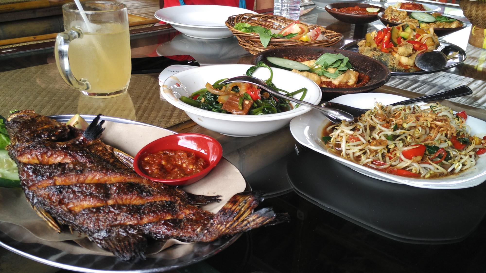
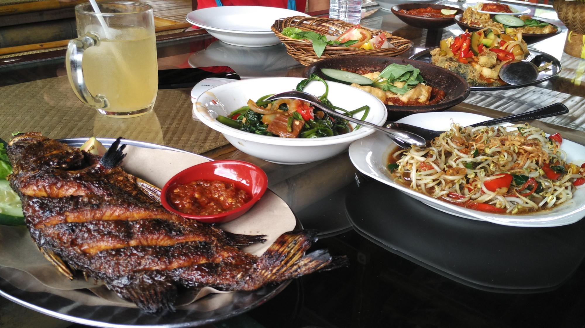

Didirikan di tempat dengan udara yang sejuk dan berada ditengah-tengah kebun bunga,
dihiasi dengan pemandangan gunung Panderman dan gunung Arjuno menjadikan suasana benar-benar
kembali ke alam, datang dan nikmati alternatif baru wisata kuliner alami bagi anda, keluarga, maupun kolega.
Datang dan nikmati sensasi kuliner berbeda dan akan menjadi pengalaman yang tidak terlupakan bagi anda dan keluarga.
WAHANA LESEHAN PRING PETHUK
1. Kolam untuk memancing ( Sewa pancing mulai Rp. 15.000 )
2. Wisata berkuda ( Harga mulai Rp. 10.0000 - Rp. 20.000 )
"tempat nya Asri.... memang agak masuk dan jalanan nya kecil, tapi lesehan dgn suasana desa serta asri nyaman sekali, apalagi kalau mau mancing sendiri, atau dgn anak2 dapat melihat hewan2 peliharaan di sebelah belakang"
"Lokasinya mudah dijangkau walaupun jalan aksesnya bukan di pinggir jalan raya. Tempatnya lesehan dan terbuat dari bambu serta mengelilingi kolam ikan yang luas.."
"resto ini sama dengan waroeng bambu. namun untuk ukuran luasnya lebih luas resto pring pethuk ini. menu yg disediakan pun sama. namun untuk lokasinya lebih baik daripada waroeng bambu."
 

ULASAN
"tempat nya Asri.... memang agak masuk dan jalanan nya kecil, tapi lesehan dgn suasana desa serta asri nyaman sekali, apalagi kalau mau mancing sendiri, atau dgn anak2 dapat melihat hewan2 peliharaan di sebelah belakang"
"Lokasinya mudah dijangkau walaupun jalan aksesnya bukan di pinggir jalan raya. Tempatnya lesehan dan terbuat dari bambu serta mengelilingi kolam ikan yang luas.."
"resto ini sama dengan waroeng bambu. namun untuk ukuran luasnya lebih luas resto pring pethuk ini. menu yg disediakan pun sama. namun untuk lokasinya lebih baik daripada waroeng bambu."